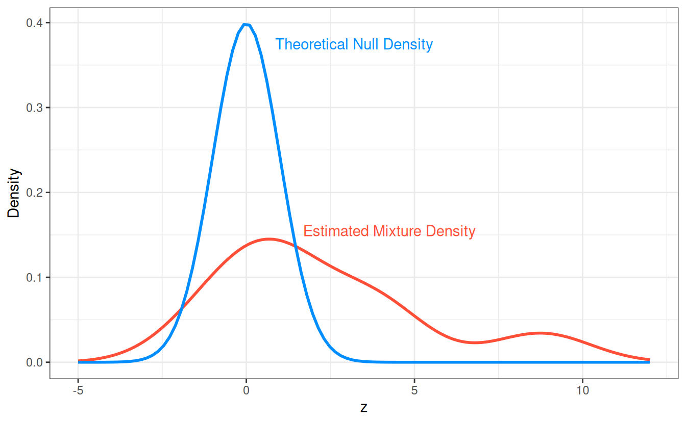

Inference: Local mfdr
Ryan Miller and Patrick Breheny
Source:vignettes/articles/inference-local.rmd
inference-local.rmdLocal False Discovery Rates
Classical, single-feature, hypothesis testing approaches rely upon tail-area probabilies, or the probability that a test statistic, z, exceeds a certain value. In contrast, local approaches like local mfdr base inference on that feature’s specific value value of z without considering the hypothetical possibility of more extreme results.
Local false discovery rates are a Bayesian idea that can be implemented in large-scale testing situations by using empirical Bayes methods to obtain estimates of: Pr(H_{0j} | z_j = z)
The probability of the j^{th} null hypothesis being true, conditional upon the exact value of the observed test statistic z_j. This probability is defined as the local false discovery rate for the j^{th} feature.
Estimation
Using Bayes’ rule, we have
Pr(H_{0j} | z_j = z) = \frac{\pi_0 f_0(z)}{\pi_0f_0(z) + (1 - \pi_0) f_1(z)},
where \pi_0 is the prior probability of a true null hypothesis for the collection of tests, f_0 is the theoretical density of test statistics under the null, and f_1 is the density of non-null test statistics.
A variety of estimators are possible depending on how one goes about
estimating this mixture of densities. One simple approach, currently
used by ncvreg, is to set \pi_0 =
1 and to avoid estimating f_1 by
estimating only the marginal density f(z) using a kernel density approach.
Thus:
\widehat{\text{mfdr}}(z) = \frac{\pi_0 f_0(z)}{\hat{f}(z)}. In situations where f_0(z) > \hat{f}(z), local mfdr estimates are capped at 1.
Test Statistics
For each predictor, mfdr() constructs a test statistic
based upon the mathematical conditions necessary for that variable to
enter the model characterized by a given value of \lambda. For linear regression models, these
statistics have the form:
z_j = \frac{\mathbf{x}_j^T(\mathbf{y} - \mathbf{X}_{-j}\mathbf{\beta}_{-j})}{\sigma/\sqrt{n}} The subscript -j indicates the removal of the j^{th} predictor. For logistic and Cox regression models, these statistics have the form:
z_j = \frac{u_j+ v_j\beta_j}{\sqrt{v_j}} Here u_j is the unpenalized score function (ie: the first derivative, with respect to \beta_j, of the log-likelihood), and v_j is the j^{th} diagonal element of the unpenalized Hessian matrix (ie: the second derivative of the log-likelihood)
Under feature independence, each of these statistics will follow a
standard normal distribution under the null hypothesis of that predictor
being independent of the current model’s residuals. Despite being
derived under independence, mfdr tends to be accurate under
mild to moderate dependence structures, see Miller and Breheny (2018)
for additional details.
Examples
Local mfdr estimates can be obtained via the summary()
function:
fit <- ncvreg(Prostate$X, Prostate$y)
summary(fit, lambda = 0.07, number = Inf)
# MCP-penalized linear regression with n=97, p=8
# At lambda=0.0700:
# -------------------------------------------------
# Features satisfying criteria : 8
# Average mfdr among chosen features : 0.592
#
# Estimate z mfdr Selected
# lcavol 0.530785 8.7704 < 1e-04 *
# svi 0.684680 3.9737 0.010695 *
# lweight 0.622144 3.7369 0.026104 *
# lbph 0.038452 1.5077 0.901245 *
# age -0.004084 -1.2704 0.926945 *
# pgg45 0.000000 0.8675 0.951263
# gleason 0.000000 0.7467 0.955590
# lcp 0.000000 -0.2711 0.964801The argument number = Inf requests mfdr estimates for
all features, regardless of whether or not they are active in the
specified model. These estimates can be understood by studying the
theoretical null and empirically estimated mixture densities for these
data:

The feature lcavol has an extremely small estimated mfdr
with a statistic of z = 8.77, the
origin of this estimate is apparent when examining the ratio between the
null and mixture densities at z = 8.88.
In contrast, the feature lbph has a estimated mfdr of 0.94 with a statistic of z = 1.51, this estimated is explained by the
null and mixture densities being similar near z = 1.51.